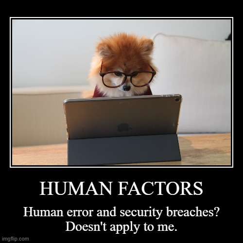
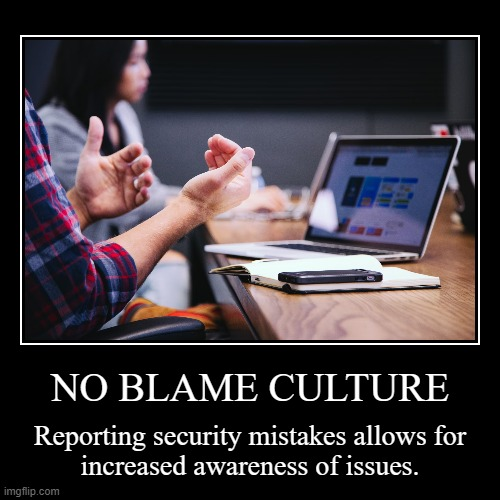

Prompt
Review the ten photos provided through a human-centered cybersecurity framework. Create a meme for your favorite three, explaining what is going on in the individual or individual's mind(s). Explain how your memes relate to Human-centered cybersecurity.
#1: Human Factors

Statistically, humans are the primary target of cyber attacks.
The people using the technology cannot place themselves on the outside of the problem.
They can be a great asset when given the proper tools, education, and policies.
#2: Affinity

Behavior without regard for security is more likely when a sense of ownership is missing.
How much an individual feels connected to a device can change how they treat it.
The same, or more, cautions should be exercised in either case to help protect networks from attack.
#3: No Blame Culture

To err is human. Learning from it is useful.
Fear of getting in trouble can not exceed knowing to do the right thing.
Repeating mistakes is not an acceptable side effect of keeping secrets.